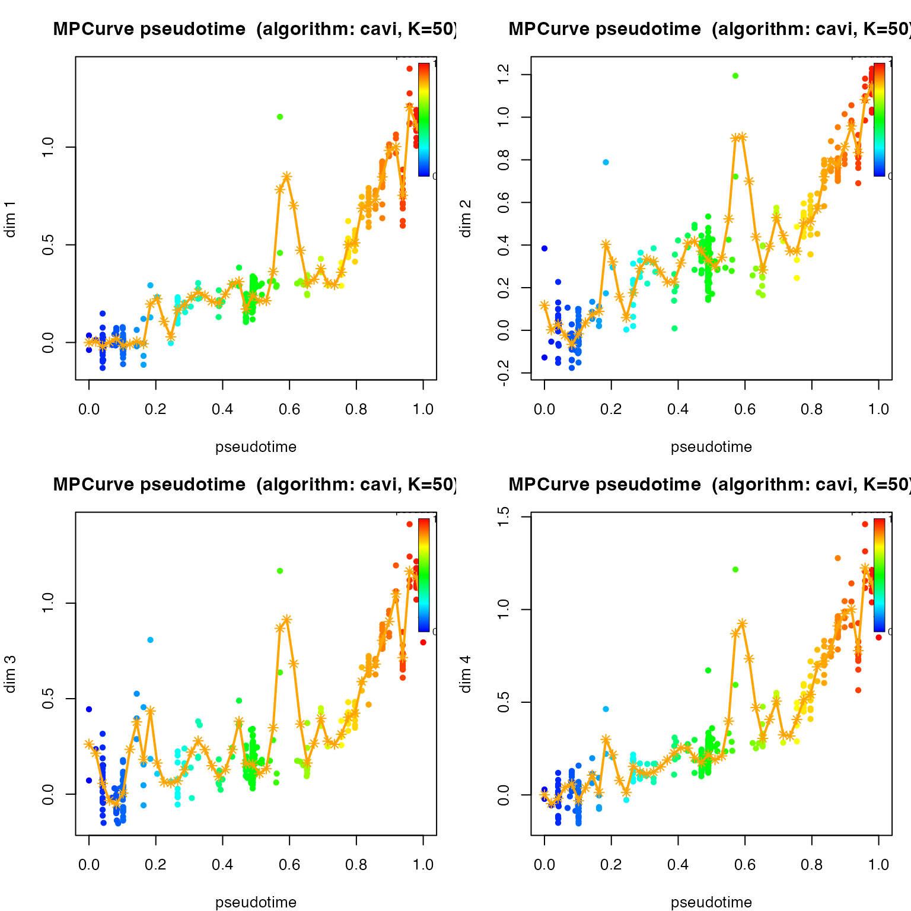
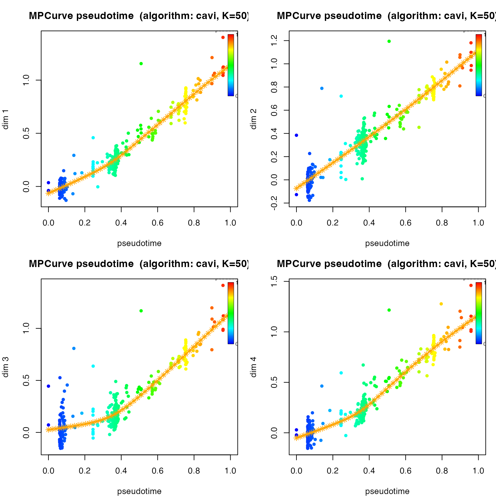

Analysis on the eLife Fitness Dataset using MPCurver
Vignette Author
2026-04-04
fitness.rmdOverview
This note revisits the eLife fitness dataset using the current
unified interface in MPCurver, with a specific focus on
learning the number of latent ordering systems.
We now keep the workflow intentionally simple:
- use
isomapas the initialization method; - set
K = 50;
First look at the data:
Take a look at the number of mutants and environments.
data.frame(
quantity = c("mutants", "environments", "fitness columns", "error columns"),
value = c(nrow(X), ncol(X), length(fitness_cols), length(error_cols))
) |>
knitr::kable()| quantity | value |
|---|---|
| mutants | 421 |
| environments | 45 |
| fitness columns | 45 |
| error columns | 45 |
sort(table(env_category), decreasing = TRUE) |>
as.data.frame() |>
stats::setNames(c("category", "n_environments")) |>
knitr::kable()| category | n_environments |
|---|---|
| time course | 10 |
| glucose / batch | 9 |
| other | 9 |
| drug / chemical | 8 |
| carbon source | 5 |
| salt stress | 4 |
Initial fit of a MPCurver
First, we will try to fit a MPCurve using MPCurver
package, the goal is to learn the latent position of all the mutants
such that their fitness scores are functions that vary smoothly along
the latent positions.
fit_unidir <- fit_mpcurve(
X,
method = "isomap",
K = 50,
rw_q = 2,
verbose = FALSE
)Take a look at the convergence:
plot(fit_unidir, plot_type = "elbo")Look at some fitted trajectories (first 4 environments):
par(mfrow = c(2, 2), mar = c(4, 4, 3, 1))
plot(fit_unidir, dims = 1)
plot(fit_unidir, dims = 2)
plot(fit_unidir, dims = 3)
plot(fit_unidir, dims = 4)
These four environments (EC Batch 19, EC Batch 3, EC Batch 6, EC Batch 13) show very similar trajectories along the latent position, both appearing to increase with latent positions. However, the fitted curves appear to be quite wiggly. To make the curves smoother, we can apply a prior on , which controls the roughness of the trajectories. The prior is an exponential prior assigned to . By increasing the rate parameter of the exponential prior, we can make the fitted trajectories smoother.
fit_unidir_smooth <- fit_mpcurve(
X,
method = "isomap",
K = 50,
iter = 500,
rw_q = 2,
lambda_sd_prior_rate = 1e4,
verbose = FALSE
)Again, check if the model has converged:
plot(fit_unidir_smooth, plot_type = "elbo")
summary(fit_unidir_smooth)## MPCurve Model Summary
## Algorithm : cavi | Model : homoskedastic | n=421 d=45 K=50
## Underlying fit summary
## <summary.cavi>
## n = 421, d = 45, K = 50
## model = homoskedastic, RW(q) = 2
## init = isomap, discretization = quantile, adaptive = variational
## iter = 349, converged = yes
## last ELBO = 11842.508 (delta last = 0.01137)
## last logLik = 14069.441 (delta last = 0.01416)
## pi range = [2.22e-16, 0.369]
## sigma2 range = [0.001992, 0.3605]
## lambda range = [22147, 4771014]
## relative change (last step):
## ELBO: 9.6e-07
## logLik: 1.01e-06
## lambda_vec (L2 rel): 0.00428Take a look at the fitted trajectories:
par(mfrow = c(2, 2), mar = c(4, 4, 3, 1))
plot(fit_unidir_smooth, dims = 1)
plot(fit_unidir_smooth, dims = 2)
plot(fit_unidir_smooth, dims = 3)
plot(fit_unidir_smooth, dims = 4)
This looks much more reaonsable to me. We can compare the mean latent positions learned by the two models:
cor(fit_unidir_smooth$locations$mean$pseudotime, fit_unidir$locations$mean$pseudotime)## [1] 0.952165
plot(fit_unidir_smooth$locations$mean$pseudotime, fit_unidir$locations$mean$pseudotime,
xlab = "Latent position (smooth)", ylab = "Latent position (rough)"
)
abline(0, 1, lty = 2)The latent positions do not change much, but the trajectories are much smoother.